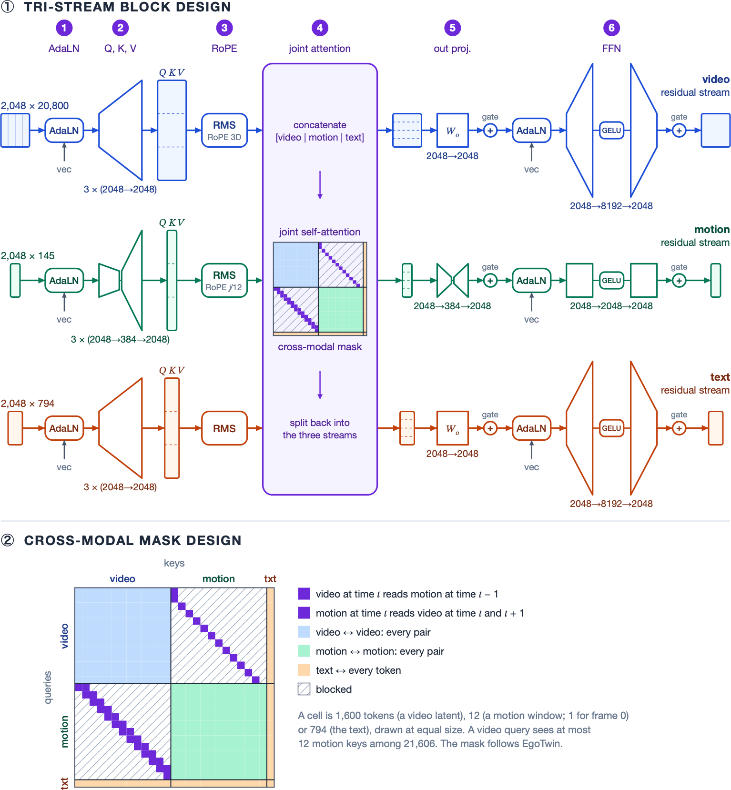
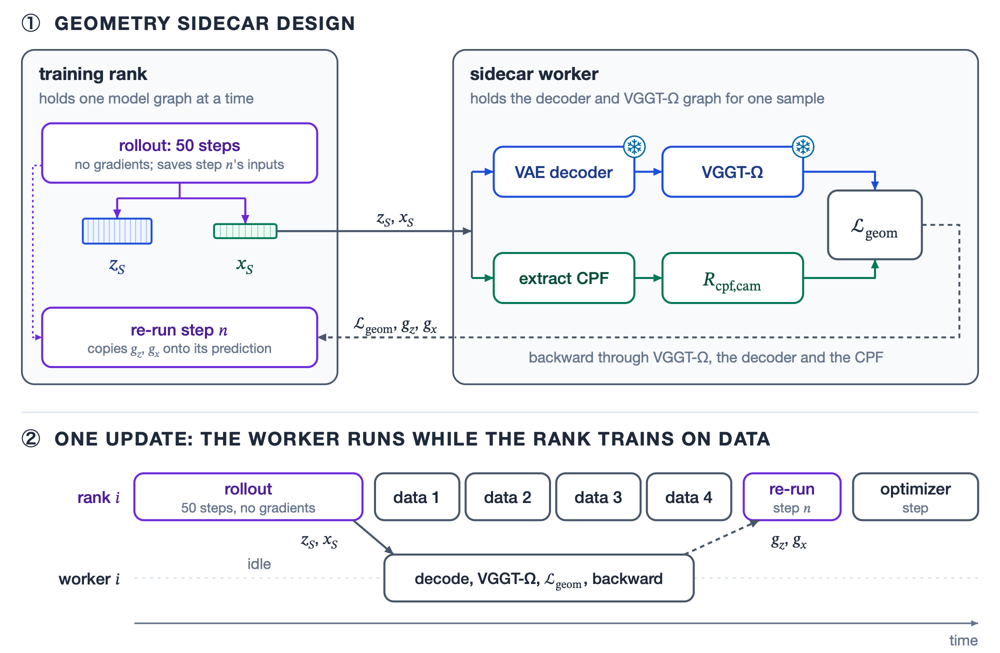

Aligning Egocentric Video and Human Motion Generation
Overview
When you wear a camera on your head, the video it records and the way your body moves are two views of the same event. The camera pans exactly when your head turns, and your hands appear in the frame when your arms bring them there. We build one model that generates egocentric video and the wearer's full-body motion together, or either one given the other. It extends the 8.3-billion-parameter video diffusion model HunyuanVideo 1.5 with a motion stream, and it is trained on about 180 hours of paired video and motion from NymeriaPlus.
A model trained only to denoise each modality learns their agreement implicitly, and it leaves a gap: the camera in its generated video and its generated head turn differently. We close part of that gap in two ways. A curriculum hides the caption and gives one modality clean, so that each stream has to read the other. Geometric post-training then scores the model's own samples with VGGT-Ω, a 3D reconstruction model, by comparing the camera it recovers from the generated video with the generated head. Making that reward affordable for an 8B-parameter video model is the main engineering problem we solve. We copy the reward's gradient onto a single, randomly drawn denoising step, weighted so that the update is an unbiased estimate of the full copied gradient, and we compute the reward on a separate sidecar node.
Compared with joint finetuning alone for the same number of updates, the full recipe lowers the rotation error between the generated video's camera and the generated head from 21.5° to 16.7°. It also brings both modalities closer to real data: the video FID falls from 71.7 to 63.8, and the motion's Fréchet distance from 42.6 to 28.2.
Why align video and motion?
Diffusion transformers increasingly generate several modalities at once. Stable Diffusion 3 lets text and image tokens attend to each other throughout denoising, DreamZero extends a video model to predict video and robot actions together, and EgoTwin generates egocentric video and human motion jointly. In each case the streams learn to agree only through the data. Each modality is trained to denoise toward its own target, so nothing in the objective penalizes a video and a motion that describe different events.
Egocentric video gives us a direct way to measure that disagreement. The camera is mounted on the wearer's glasses, so the camera trajectory implied by the video should match the head in the motion. We recover the camera's rotation from a video with VGGT-Ω and compare it with the head's, both relative to the first frame. On recorded video and recorded motion the two differ by only about 4° on average, so the measurement itself is accurate. After a pretrained video model is adapted to joint generation, the camera of its generated video and its generated head differ by 22° on average.
The obvious fix is to optimize this agreement directly: treat the frozen estimator as a differentiable reward and backpropagate through the sampler, as reward-finetuning methods such as DRaFT and AlignProp do for images. For an 8B-parameter video model, that means differentiating through dozens of denoising steps, the video decoder and the estimator, which is prohibitively expensive in both memory and time. Much of this post is about how we get a useful gradient without doing that.
One model, three tasks
Each training clip pairs 4.8 seconds of egocentric video with the wearer's full-body motion and a caption. The motion keeps all 145 frames at 30 fps, and the video keeps every third frame (49 frames at 10 fps), so video frame \(k\) is motion frame \(3k\). Given the first frame, the first pose and the caption, one model handles three tasks: joint generation of both, video-conditioned motion, and motion-conditioned video. The tasks differ only in what is given. During training the video and the motion get independent noise levels, so at sampling time a given modality is simply held at noise level zero while the other is denoised from pure noise.

Data
We train on NymeriaPlus, an extension of the Nymeria dataset, in which people do everyday activities while wearing Project Aria glasses and an inertial motion-capture suit. NymeriaPlus fits the wearer's body with the MHR body model, in the same coordinate frame as the glasses. We use 790 recordings from 196 participants, about 200 hours, and hold out 20 participants entirely, so every result on this page is on people the model never saw in training. Nymeria's narrations are written in the third person about the wearer (“C places the ball on the table with her left hand…”) and mention other people and actions that involve no movement. We rewrite each one with a language model into first-person instructions that describe only the wearer's own movements (“First Person POV: Sit on the living room sofa. Place the ball on the table with your left hand…”).

Architecture
We turn HunyuanVideo 1.5 into a multimodal diffusion transformer (MM-DiT) with three streams. Motion tokens sit beside the video and text tokens. Each stream has its own modulation, projections and feed-forward network, and the three meet in one self-attention over the concatenated sequence, with EgoTwin's cross-modal mask deciding which video latents and motion frames attend to each other. Only the first 18 of HunyuanVideo's 54 blocks carry motion; the motion then leaves for its own output head, while video and text continue through the remaining 36.
Each motion frame becomes one token of 290 numbers, adapted from Kimodo's representation: the pose of the glasses' central pupil frame (CPF) as the root, a smoothed head path, and the positions, rotations and velocities of 23 body joints, all in a gravity-aligned frame anchored at the first frame's head. There is no learned motion autoencoder. Rooting the motion at the head rather than the pelvis means the camera can be read straight out of a generated motion, which is what the geometric reward below needs.

Training in four phases
We train in four phases, each starting from the previous one's checkpoint:
- Text-to-motion pretraining. The motion stream alone (about 383M parameters) learns to generate motion from text. It reads text features from HunyuanVideo's frozen text layers, so it sees the same features in the later phases.
- Joint finetuning. All weights of the MM-DiT learn to denoise video and motion together. Each modality draws its own noise levels, so the model sees cleaner video beside noisier motion and the reverse, which covers all three tasks.
- Curriculum learning. The caption is withheld and one modality is given clean, to make each stream use the other.
- Geometric post-training. A 3D reward aligns the camera of the generated video with the generated head.
The curriculum targets a shortcut. After joint finetuning, a generated video follows a given motion closely, but a generated motion largely ignores a given video. We suspect the caption already describes the action well enough to denoise the motion without looking at the video. For 5,000 updates, the curriculum replaces the caption with the empty one and gives one modality clean. It runs 2,000 updates of motion-conditioned video, then a 500-update ramp as the caption returns. Then come 2,000 updates in which half of the clips are given their video, so the motion trains as video-conditioned generation, while the other half denoise both modalities without a caption. A final 500-update ramp brings the caption back.
Geometric post-training
The most visible sign of alignment is whether the head turns the way the camera pans, so for the last 2,500 updates we score the model's own samples on exactly that. Each training GPU generates a joint sample with the full 50-step sampler, decodes its video latent into 49 frames, and runs VGGT-Ω on them to recover the camera's rotation \(\hat R^k\) at every frame \(k\). From the generated motion we take the head's rotation at the same moments and turn it into a camera rotation with the headset's factory calibration, \(C^k = R^{3k}_{\text{world},\text{cpf}}\,R_{\text{cpf},\text{cam}}\). We express both trajectories relative to their first frame, \(\tilde R^k = (\hat R^0)^\top \hat R^k\) and \(\tilde C^k = (C^0)^\top C^k\), and the loss is the mean angle between them:
$$\mathcal{L}_{\text{geom}} = \frac{1}{N+1}\sum_{k=0}^{N} \angle\big((\tilde R^k)^\top \tilde C^k\big), \qquad \angle(R) = \arccos\frac{\operatorname{tr} R - 1}{2}.$$We use only rotations because VGGT-Ω's translations come in an arbitrary scale. The joint-finetuning loss on real data stays on throughout, and the geometric loss is added with weight \(\lambda_{\text{geom}} = 0.005\). The hard part is not the loss but its gradient.
Copying the gradient through diffusion time
The sampler takes \(S = 50\) Euler steps. At step \(n\), the model looks at the noisy video latent \(z_n\) and the noisy motion \(x_n\), and it predicts a video velocity \(\hat v_n\) and a clean motion \(\hat x_n\). Each modality then steps along its own noise schedule, \(\varphi\) for the video and \(\sigma\) for the motion:
$$z_{n+1} = z_n + \Delta\varphi_n\,\hat v_n, \qquad x_{n+1} = x_n + \Delta\sigma_n\,\frac{x_n - \hat x_n}{\sigma_n}.$$The motion head predicts clean motion, so its velocity is \((x_n - \hat x_n)/\sigma_n\). Backpropagating the loss through the frozen VGGT-Ω and the frozen decoder gives its gradient with respect to the finished sample, which we call the endpoint gradients:
$$g_z = \frac{\partial \mathcal{L}_{\text{geom}}}{\partial z_S}, \qquad g_x = \frac{\partial \mathcal{L}_{\text{geom}}}{\partial x_S}.$$The gradient we actually want is with respect to the weights \(\theta\). It has one term per sampling step. Each term multiplies the model's Jacobian at that step, \(J_{v,n} = \partial\hat v_n/\partial\theta\) and \(J_{x,n} = \partial\hat x_n/\partial\theta\), by the gradient of the loss with respect to the state the step produced:
$$G_{\text{exact}} = \sum_{n=0}^{S-1}\Big(\Delta\varphi_n\, J_{v,n}^\top \frac{\partial\mathcal{L}_{\text{geom}}}{\partial z_{n+1}} \;-\; \frac{\Delta\sigma_n}{\sigma_n}\, J_{x,n}^\top \frac{\partial\mathcal{L}_{\text{geom}}}{\partial x_{n+1}}\Big).$$Only the last term uses the endpoint gradients we already have. Every earlier state gradient has to be carried back from the finished sample through all the later steps. That means keeping or recomputing the activations of up to 50 forward passes of an 8B-parameter model over a 20,800-token video, and multiplying their Jacobians together. Following the differentiable-reward variant of FDFO (McAllister et al.), we skip that chain. We copy the endpoint gradients to every step, as if each step's output reached the final sample unchanged:
$$G_{\text{copy}} = \sum_{n=0}^{S-1}\Big(\Delta\varphi_n\, J_{v,n}^\top g_z \;-\; \frac{\Delta\sigma_n}{\sigma_n}\, J_{x,n}^\top g_x\Big).$$The two sums use the same Jacobians and agree exactly in the last term; they differ only in which gradient each Jacobian multiplies. Dropping the chain is more than a saving. A product of 50 step Jacobians can amplify or shrink the gradient and make training unstable, while McAllister et al. argue that a copied gradient only needs to point into the same half-space as the exact one to keep descending the loss. In FDFO's image-generation ablations, backpropagating through the sampling chain did worse than copying the endpoint gradient.
One step, drawn at random: an unbiased estimate
Copying removes the chain but not the sum. Each term \(J^\top g\) is a backward pass through the model at that step's inputs, so \(G_{\text{copy}}\) still costs 50 backward passes. We evaluate one. Before the rollout begins, we draw a single step \(n\) with probability \(p_n\). We then run the 50-step rollout without gradients, saving only that step's inputs. Finally we re-run the model at step \(n\) with gradients enabled and scale its term by \(1/p_n\):
$$\hat G = \frac{1}{p_n}\Big(\Delta\varphi_n\, J_{v,n}^\top g_z \;-\; \frac{\Delta\sigma_n}{\sigma_n}\, J_{x,n}^\top g_x\Big).$$This is an importance-sampled estimate of the sum, and it is unbiased for any distribution that gives every step a nonzero probability. Writing \(T_n\) for step \(n\)'s term of \(G_{\text{copy}}\), the factor \(1/p_n\) cancels the chance of drawing that step:
$$\mathbb{E}_{n\sim p}\big[\hat G\big] \;=\; \sum_{n=0}^{S-1} p_n \cdot \frac{T_n}{p_n} \;=\; \sum_{n=0}^{S-1} T_n \;=\; G_{\text{copy}}.$$Drawing the step before the rollout costs nothing in correctness, because the draw is independent of the rollout's noise. Knowing it in advance is what lets the rollout keep one step's inputs instead of fifty.
The distribution only changes the variance. We use \(p_n \propto |\Delta\sigma_n|/\sigma_n\), the size of the motion term's own coefficient. With this choice, the motion term's weight after reweighting, \((|\Delta\sigma_n|/\sigma_n)/p_n = \sum_m |\Delta\sigma_m|/\sigma_m \approx 3.9\), is the same whichever step is drawn. Every update therefore pushes the motion equally hard, and only the video term's weight varies, between 0.37 and 1.7 on our schedule. Because \(|\Delta\sigma_n|/\sigma_n\) is the fraction of the remaining noise that step \(n\) removes, the draw favors the late, nearly clean steps: the last step is drawn a quarter of the time, and the last ten steps two thirds of the time. In code, the whole update is one extra backward pass of a scalar, with the endpoint gradients held constant:
$$\hat G = \nabla_\theta\,\frac{1}{p_n}\Big(\Delta\varphi_n\,\langle g_z, \hat v_n\rangle \;-\; \frac{\Delta\sigma_n}{\sigma_n}\,\langle g_x, \hat x_n\rangle\Big).$$This sits between two earlier designs. ReFL also supervises a single random step, but it stops sampling there and scores that step's one-step prediction of the clean sample. We finish the sample, score the real output, and reweight the step by \(1/p_n\) so that the expectation is the full copied gradient. FDFO trains on every step of a rollout, but one rollout of our video is costly enough that we can afford only one rollout, and one re-run step, per GPU per update.
One caveat: before it is applied, the geometric gradient is capped at a quarter of the norm of the data gradient, \(G = G_{\text{data}} + \min\big(1,\, 0.25\,\lVert G_{\text{data}}\rVert / \lVert\lambda_{\text{geom}}\hat G\rVert\big)\,\lambda_{\text{geom}}\hat G\), and the total is clipped at norm 1. Both operations are nonlinear, so the update actually applied is not exactly unbiased, even though \(\hat G\) is an unbiased estimate of \(G_{\text{copy}}\).
The geometry sidecar
The copied gradient makes the generator's side cheap: one gradient-free rollout and one re-run step. The reward is still heavy. To return \(g_z\), we have to backpropagate through the VAE decoder on 49 frames and the one-billion-parameter VGGT-Ω on every frame, and their activations are comparable in size to the MM-DiT's own. Freezing these models removes their parameter gradients and optimizer state but not their activations. Fully sharded data parallelism (FSDP) doesn't help either, because it shards parameters, gradients and optimizer state, not per-sample activations. So we move the reward to a second node.
The training node trains the MM-DiT with FSDP across eight GPUs. The second node, the geometry sidecar, runs eight independent workers, one per GPU, each holding the decoder and VGGT-Ω. Each training rank gets a worker of its own because FSDP keeps the ranks in lockstep: they exchange weight shards before and after every layer, so if two ranks shared a worker, the one served second would stall the whole node.
The copied gradient also keeps the traffic between the nodes small. After its rollout, a rank sends its worker only the finished sample \((z_S, x_S)\), detached from any graph, and the serial number of the headset that recorded the clip. The worker treats the two tensors as fresh inputs that require gradients. It decodes the video, runs VGGT-Ω with activation checkpointing over the 49 frames, turns the generated head into a camera with that headset's calibration, evaluates the loss, and backpropagates it to its inputs. It sends back three things: the loss, \(g_z\) and \(g_x\). Meanwhile, the rank trains on its four ordinary data microbatches. It kept only the inputs of the step it drew (the noisy latent and motion, the noise levels, the step size and the random-number state), and the rollout held no activations because it ran without gradients. When the gradients arrive, the rank re-runs that step and applies them to its prediction.

What remains expensive is the rollout itself. On two nodes of eight B200 GPUs, a post-training update takes about 42 s, against about 3 s for a joint-finetuning update, and the 50-step rollout accounts for about 34 s of it.
Results
We compare four models, each trained for 12,500 updates: joint finetuning alone, with the curriculum, with geometric post-training, and with both (the final model). A model that leaves out a phase spends those updates on the joint-finetuning loss instead, so all four are matched in training steps. Each is evaluated on the same 64 clips from the 20 held-out participants, drawing one sample per clip and task with the clip's fixed seed.
Camera–head consistency
| Curriculum | Geometry | Self-consistency | Video-conditioned | Motion-conditioned |
|---|---|---|---|---|
| 21.5 | 29.7 | 15.8 | ||
| ✓ | 19.5 | 31.4 | 14.8 | |
| ✓ | 18.6 | 27.6 | 14.1 | |
| ✓ | ✓ | 16.7 | 29.6 | 14.1 |
Rotation error in degrees, relative to the first frame (lower is better): the joint video's camera against the joint head (self-consistency); the generated head against the recorded head, given the recorded video (video-conditioned); and the generated video's camera against the recorded head, given the recorded motion (motion-conditioned). VGGT-Ω's camera from the recorded video lies 3.8° from the recorded head, the lowest error the camera-based columns can reach. Best in bold, second best underlined.
The final model is the most self-consistent: the camera of its generated video and its generated head differ by 16.7°, against 21.5° after joint finetuning alone, and each phase helps on its own. Given recorded motion, the generated video's camera also follows the recorded head more closely (15.8° to 14.1°). Given recorded video, the generated head barely changes (29.7° to 29.6°).
The two conditioned columns also show how much each stream relies on the other, which we measure as how well a generated stream agrees with the modality it was given. A generated video relies strongly on a given motion: its camera lies 14–16° from the recorded head in every model. A generated motion relies on a given video much less: its head stays about 28–31° from the recorded head in every model.
Video and motion quality
| Video FID | Motion FD, pose | Motion FD, velocity | |||||
|---|---|---|---|---|---|---|---|
| Curriculum | Geometry | Joint | Motion-cond. | Joint | Video-cond. | Joint | Video-cond. |
| 71.7 | 65.8 | 42.6 | 30.9 | 0.60 | 0.62 | ||
| ✓ | 63.5 | 59.5 | 34.1 | 32.1 | 0.64 | 0.60 | |
| ✓ | 63.4 | 57.7 | 23.8 | 21.3 | 0.42 | 0.38 | |
| ✓ | ✓ | 63.8 | 55.6 | 28.2 | 21.0 | 0.37 | 0.37 |
Fréchet distances to the same clips' recordings (lower is better). Video FID uses Inception-v3 features of the 48 generated frames after the given first frame. Motion FD is computed directly on the standardized 290-dimensional motion features of the 144 generated frames (pose) and of their frame-to-frame differences (velocity), with no learned motion encoder. Motion-conditioned video uses the recorded motion, so it has no generated motion to score.
Both alignment phases bring the generated video closer to real video. In joint generation, the curriculum and geometric post-training each lower the video FID by about 8 points, from 71.7 to 63.4–63.8, and the final model has the lowest FID for motion-conditioned video, 55.6. Geometric post-training has the largest effect on the motion. On its own it cuts the pose Fréchet distance in joint generation from 42.6 to 23.8, and the final model has the lowest velocity Fréchet distance in both tasks.
Hands
| Curriculum | Geometry | Joint | Motion-cond. video | Video-cond. motion |
|---|---|---|---|---|
| Recorded | 0.83 [0.77, 0.88] | |||
| 0.65 [0.58, 0.71] | 0.72 [0.64, 0.78] | 0.72 [0.63, 0.79] | ||
| ✓ | 0.73 [0.64, 0.80] | 0.76 [0.67, 0.84] | 0.73 [0.65, 0.80] | |
| ✓ | 0.69 [0.60, 0.77] | 0.76 [0.67, 0.82] | 0.72 [0.64, 0.80] | |
| ✓ | ✓ | 0.69 [0.60, 0.76] | 0.69 [0.59, 0.77] | 0.74 [0.66, 0.81] |
HandScore with 95% clip-bootstrap intervals (higher is better). Joint: both generated. Motion-conditioned video: a generated video with the recorded motion. Video-conditioned motion: the recorded video with a generated motion.
HandScore, from EgoTwin, asks whether the video and the motion agree on the wearer's hands. A vision-language model (Qwen3-VL-32B) reports whether each hand is visible in every fourth frame, and the motion's hands are projected through the headset's calibrated camera to decide whether they should be; the score is the F-score averaged over both hands. Hand detection on egocentric video is hard even for this model. Recorded pairs score only 0.83, mostly because it misses the black gloves of the motion-capture suit, and pairing a video with another clip's motion scores about 0.43. The curriculum lifts the joint HandScore from 0.65 to 0.73.
Limitations and future work
The alignment gains are modest, and the motion still makes little use of the video when it is given. The geometric objective supervises only rotations, because VGGT-Ω's translations have no metric scale, so it shapes how the head turns but not where it travels. Post-training is slow, because every update needs a 50-step rollout. And the training motion comes from NymeriaPlus's MHR fit of inertial motion capture, whose head pose does not follow the Aria glasses exactly.
The motion's weak use of the video points to training objectives that make it need the video, or to guidance on the given video at sampling time, separate from the text guidance. A translation-aware objective with metric scale, a training set built from head-corrected motion, and a learned motion evaluator would each make the alignment and its measurement more complete. Longer, autoregressive generation would bring the model closer to its intended use: predicting what a person will see and do next.
Citation
@mastersthesis{zhang2026aligning,
title = {Aligning Egocentric Video and Human Motion Generation},
author = {Zhang, Anthony},
school = {University of California, Berkeley},
year = {2026}
}
Acknowledgements
We thank David McAllister, Vongani Maluleke, Hongsuk Choi, Brent Yi, Kie Horiuchi, Jiaman Li, and Guanya Shi for their helpful feedback and discussion.